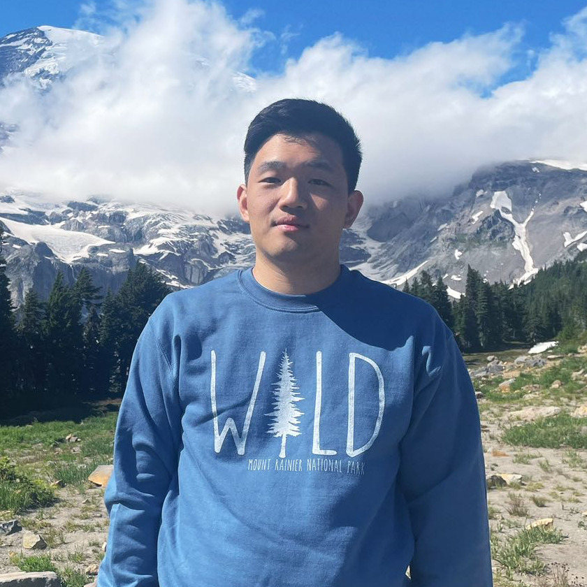

Xiang Li李希昂
Member of Technical Staff, xAI · Bellevue, WA
Previously Google DeepMind (Veo) · PhD, Carnegie Mellon University

I am a Member of Technical Staff at xAI, working on Grok Imagine. Before that, I was a Research Scientist at Google DeepMind, working on the Veo project (Veo 2, Veo 3, Omni). I received my PhD from Carnegie Mellon University, advised by Prof. Bhiksha Raj. My research interests lie in representation learning for media generation and understanding.
Highlights
Products I helped buildGrok Imagine
xAILead, Video Pretraining
Leading video pretraining for Grok Imagine, with full-stack contributions across data, diffusion modeling, and VLM.
grok.com/imagineVeo
Google DeepMindCore Contributor
Contributed to image-to-video (I2V), reference-to-video (R2V), and video editing.
deepmind.google/models/veoNews
- We launched Grok Imagine R2V!
- We launched Grok Imagine v1!
- We launched Veo 3.1, a strong video model!
- One paper accepted to EMNLP 2025 (Findings).
- We launched Veo 3 and Veo 2 controls — try it out!
- One paper accepted to ICML 2025.
- One paper accepted to CVPR 2025.
- Two papers (one first-author) accepted to ICLR 2025.
- Three papers accepted to NeurIPS 2024.
- One first-author paper accepted to ECCV 2024.
- One paper accepted to Interspeech 2024.
- Two papers (one first-author) accepted to ICML 2024.
- One paper accepted to NAACL 2024.
- One first-author paper accepted to CVPR 2024.
- One paper accepted to ICASSP 2024.
- One first-author paper accepted to EMNLP 2023.
- One first-author paper accepted to NeurIPS 2023.
- One first-author paper accepted to ICCV 2023.
Publications
2025
2024
2023
2022
2020
* denotes equal contribution.